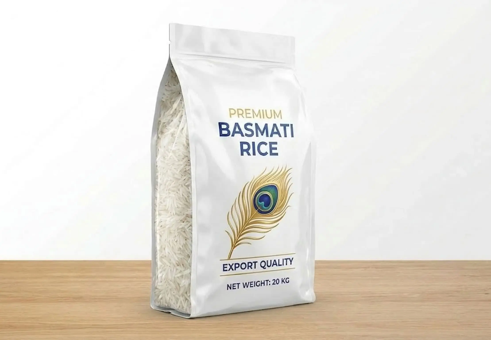

Rice Packaging Bags (PP Woven & BOPP Laminated)
100% virgin food-grade polypropylene woven sacks and 8-color BOPP laminated bags built for rice mills, wholesale traders, and Basmati exporters. Available in 5 kg, 10 kg, 25 kg & 50 kg with optional LDPE inner moisture liner — factory direct from Morbi, Gujarat.
Material100% Virgin Food-Grade PP / BOPP
GSM Range70 GSM – 120 GSM
Available Sizes5 KG, 10 KG, 25 KG, 50 KG
Finish OptionsGlossy / Matte BOPP, Plain & Printed PP
PrintingUp to 8-Color Rotogravure / 6-Color Flexo
Export Dispatch100 KM to Gandhidham & 130 KM Mundra Port